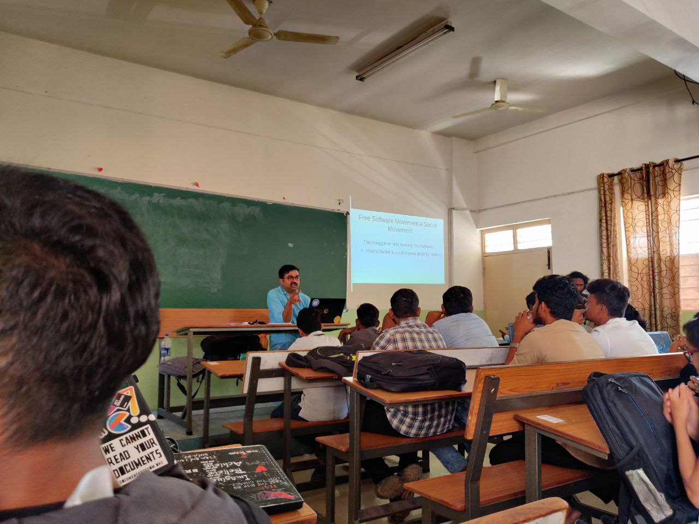
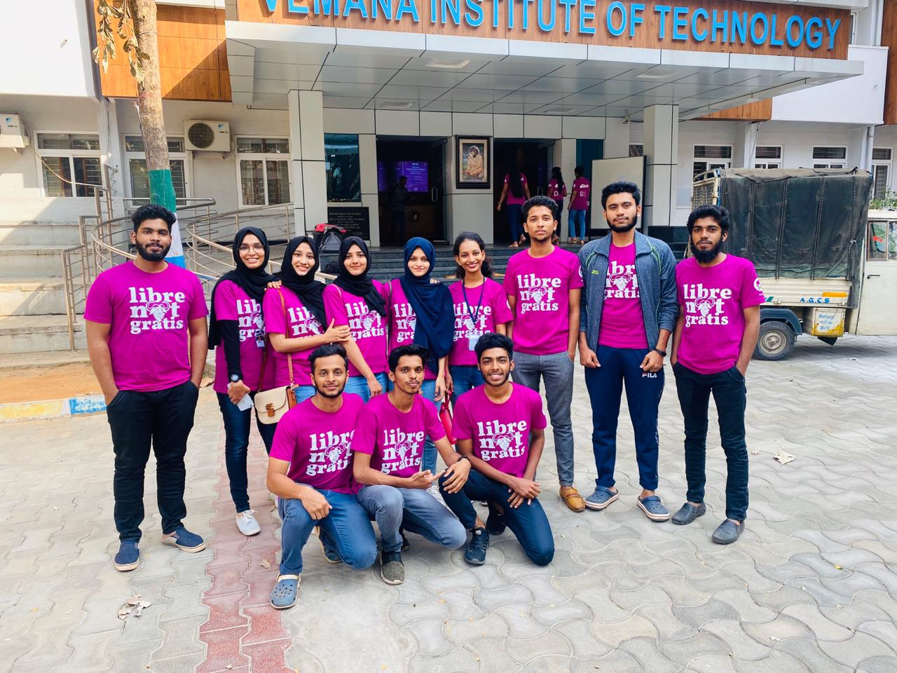

As a first-time participant, I think FSMK-WINTER Winter Camp 2020, held in VIT, Bangalore concluded well. It was a residential camp for 7 days, from 25th January to 31st January. Here, I'd love to share my camp experiences. To be honest, before participating this camp, I had this belief that our course is all about technology and its wide (and boring) scopes. But this camp taught me that there's much more to it than just technical related stuffs. This is because FSMK camps showed us a wider perspective of technology, where they made us focus on phenomenal topics like free(dom) software.
This year, the camp was divided into three technical tracks:
Our camp this year had around 150 participants, 20 volunteers/speakers from all across districts of Karnataka.
Other than the scheduled technical sessions of particular tracks, the camp provided non-technical sessions too, which were not track wise. Projects were assigned and it was developed with the help of our volunteers but time was limited for its completion. Speaking about the volunteers, me and most of my friends from our college were in Web track. Our track was divided into teams of around 6 members. Every team had a volunteer, who helped their members with everything. They were from third and fourth years of engineering. We had several games as this team.
These non-tech sessions were the only times every track came together. And for the lunch and tea breaks, of course.
What I learned from this camp, or mainly from FSMK, is that there's much more technicality to this engineering field. I also inferred that Computer Science and engineering, as well as other communication engineering or rather generally speaking, IT field I guess does not comprise of just codes kind of stuffs: there are concepts like Open hardware, Privacy, Digital economy, etc. These non-technical sessions conspired us towards a technology focused society and how every individual can contribute towards a safer and ethical techno-society. These sessions were really interesting since our speakers were cool, thanks to them. It was interactive and informative.
Each session ended at around 7pm, proceeded with dinner and called a night. My friends who've participated the previous FSMK WINTER CAMP were expecting Dr. Richard Stallman, Free Software Movement activist, to turn up any moment and give a surprise guest talk as he did the other time, but Alas! As for me and my friends, we might've bunked once or twice for sight-seeing, because, Why not! It’s not every day we visit Bangalore.
So this is my first FSMK-WINTER CAMP experience and I have to make sure I attend the next one too, if God wills. And as Adil, our favourite speaker said, “If you've missed this time, there's always a next time!”. Let’s enjoy learning.